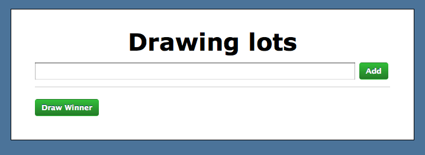
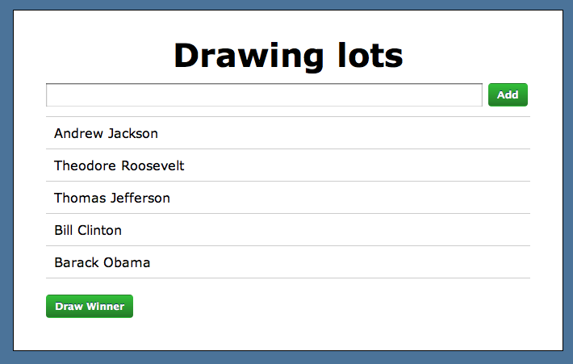
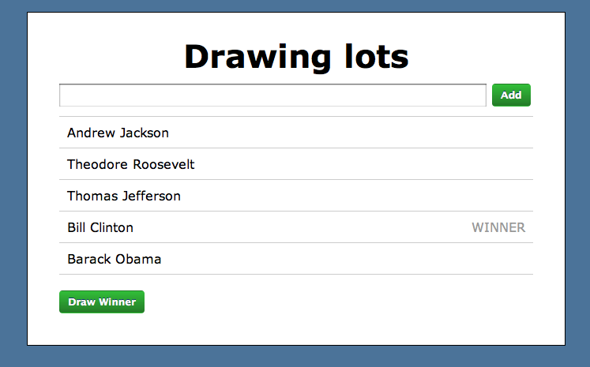
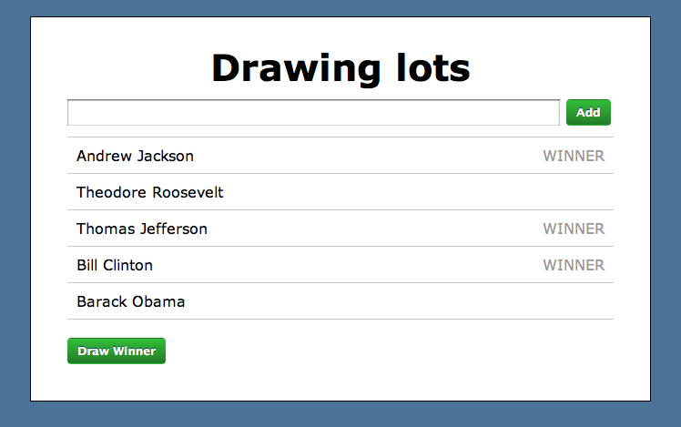

The application is a simple one-page application to draw lots. For example, if a limited number of tickets for an event were available, the organisers might decide to allocate the tickets by drawing lots. The initial screen should look like this:

As you enter names and click Add (or just press Enter), the page will eventually look like:

Eventually, you click on the Draw Winner button and you see:

Several winners can be drawn and previous winners remain:

The basic structure of the required HTML is shown in the sample.html file. Note that this is just a static HTML mock-up. There is no functionality in that page. The starting point for your project is the index.html file, which just contains an empty container div.
Create a one-page Backbone.js application to draw lots. You will need an Entrant model which has a name attribute and a boolean winner attribute (to record whether or not the entrant is a winner). You will need an associated collection (EntrantList) and views for the individual model and the collection (EntrantView and EntrantListView). Set up the initial application so that the root route loads EntrantListView into the container div. (Note: EntrantListView contains the form and the Draw Winner button.) On completion of stage 1, your page should look like the first screenshot above.
Add entrants to the collection. The simplest way to do this is to the submit event of the form in the EntrantListView. Starting code for this would look like:
events: {
'submit #new_entry': 'createEntry'
},
createEntry: function(event) {
event.preventDefault();
console.log('Form submitted');
}
(Note: the event.preventDefault(); is just to stop the form being submitted and generating a page refresh.)
Implement the Draw Winner functionality. The simplest way to implement this is to avail of the shuffle() method that comes with Underscore. You can shuffle either an array or a Backbone collection and then take the winner as the first entrant in the shuffled collection (i.e. at index 0). Set the boolean attribute of the model and have the DOM update by registering a change handler.